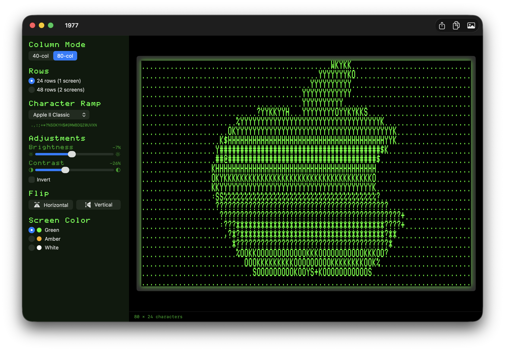
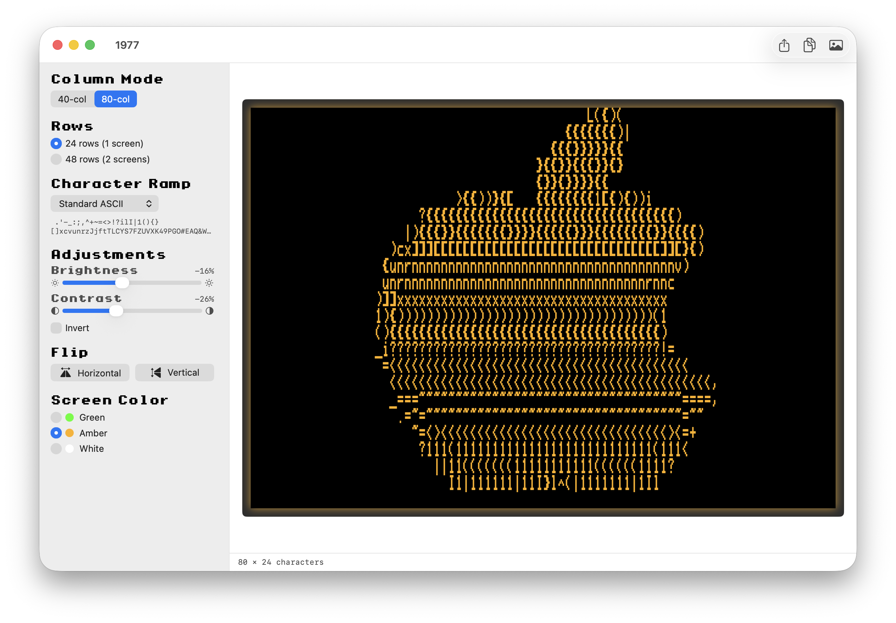
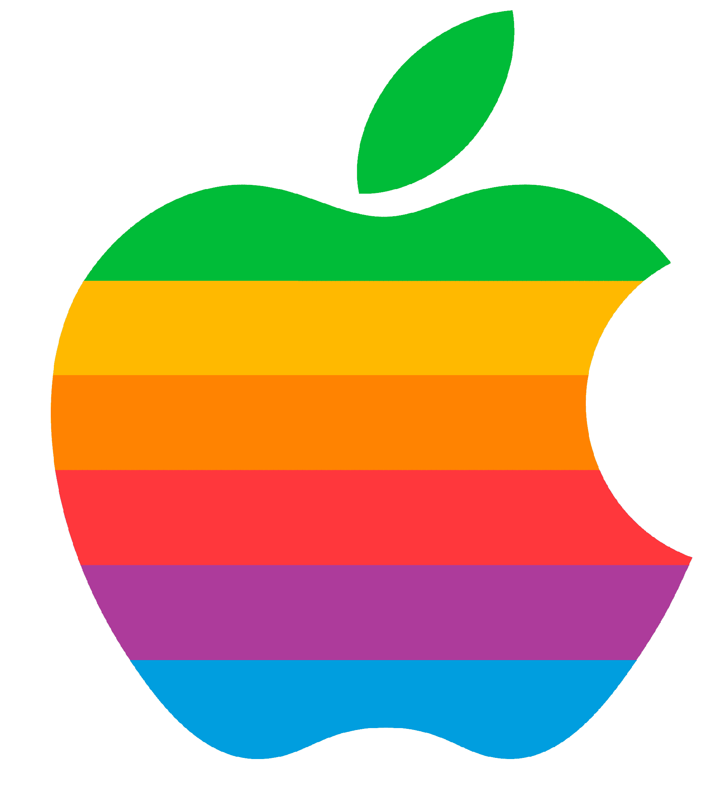
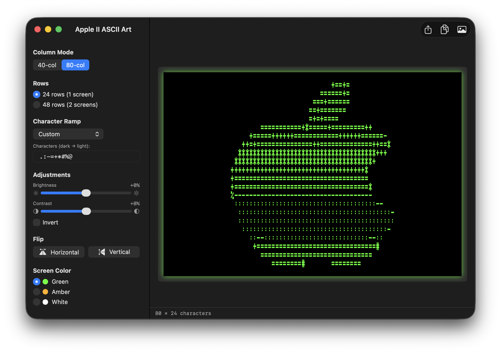
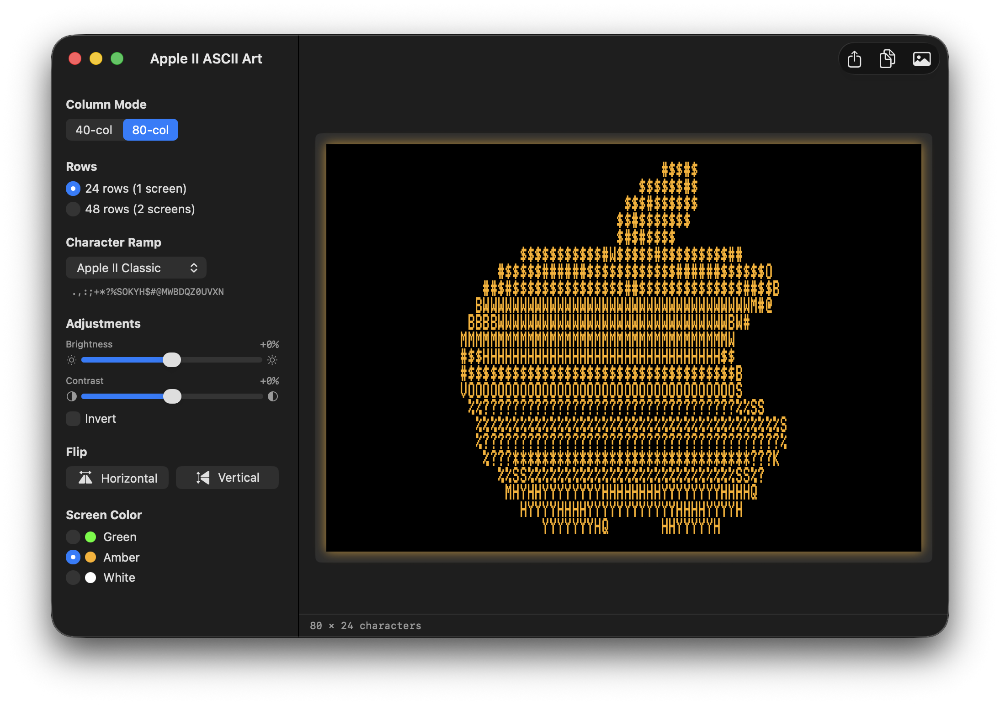
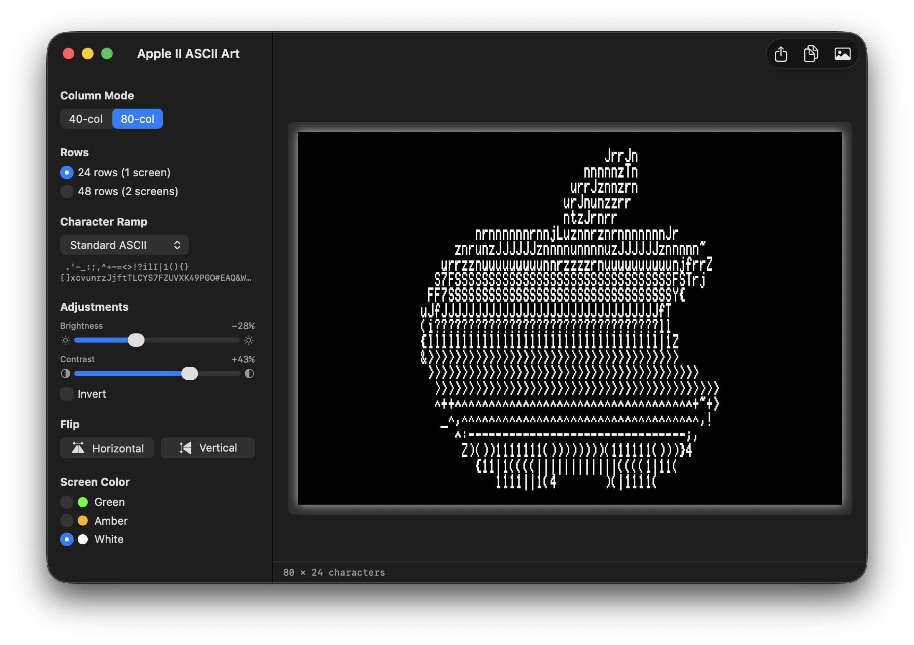
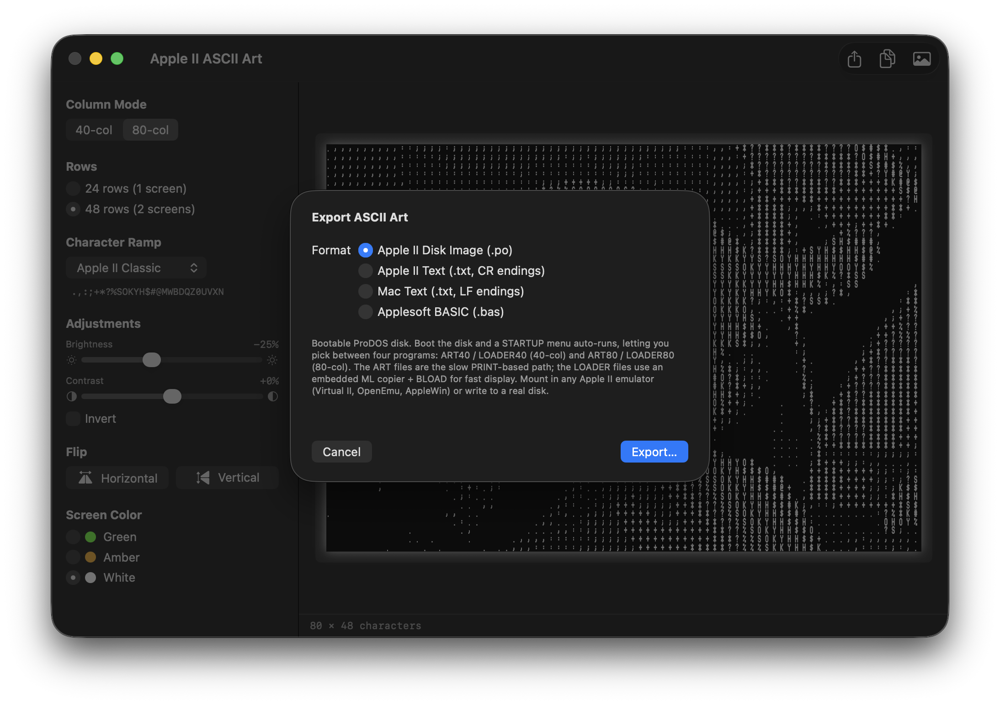
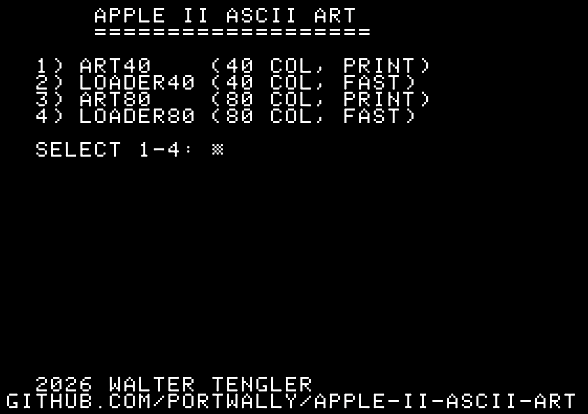

Features
40 & 80 Column Modes
Standard 40-col or 80-col card output. Same 280×192 Apple II display, mapped per character cell.
Authentic Apple II Fonts
PrintChar21 for 40-col and PRNumber3 for 80-col, both bundled in the app. Pixel-perfect glyphs.
Phosphor Preview
Live preview in classic green (#33FF00), amber (#FFB000), or white — with subtle screen glow.
Custom Character Ramps
Apple II Classic, Standard ASCII, Simple, or Dense — plus your own custom ramp text.
Drag & Drop
Drop any PNG, JPEG, TIFF, GIF, BMP, or HEIC. Brightness, contrast, invert, and flip update live.
Multiple Exports
Bootable ProDOS disk image (.po) with a STARTUP launcher, Apple II text (.txt with CR endings), Mac text (LF), or runnable Applesoft BASIC (.bas) program.
How It Works
Drop an image
Any common format works. The app aspect-fills the image into the Apple II's 280×192 display canvas.
Sample brightness
Each character cell’s region is downsampled and converted to perceptual luminance using the BT.709 coefficients.
Map to characters
The brightness value indexes into your chosen character ramp — dark to light — producing a grid of ASCII glyphs.
Export to Apple II
Save as plain text with CR line endings, or as an Applesoft BASIC program with auto-inserted PR# 3 for 80-col output.
App Screenshots


See It In Action
Drop in any image. Here’s the classic Apple rainbow logo rendered in three phosphor styles, with different character ramps.




Export Options
Save as a bootable Apple II disk image, plain text, or a runnable Applesoft BASIC program.

Disk Creation
The disk image is a bootable ProDOS volume. A built-in STARTUP launcher auto-runs at boot and lets you pick between four programs — the slow, readable PRINT versions or the fast versions that BLOAD a screen-memory dump straight to text page 1 with a small embedded 6502 ML routine.

Requirements
- macOS 14 (Sonoma) or later
- Apple Silicon or Intel
Support
App Store
Download 1977 on the Mac App Store.
Contact
Questions? Email walter.tengler@gmail.com
Fonts
Bundled Apple II fonts (PrintChar21, PRNumber3) are from Kreative Korporation.